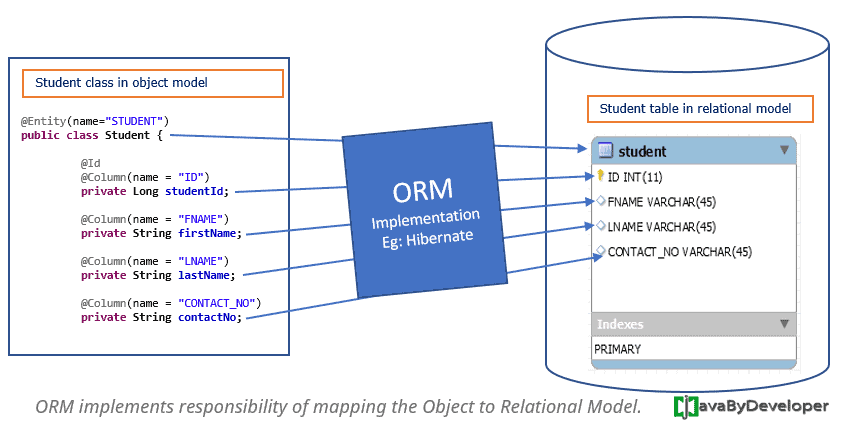

A la hora de almacenar los datos de un programa orientado a objetos en una base de datos relacional, surge un inconveniente debido a incompatibilidad de sistemas de tipos de datos.
En el software orientado a objetos, la información se representa como clases y objetos. En las bases de datos relacionales, como tablas y sus restricciones. Por tanto, para almacenar la información tratada en un programa orientado a objetos en una base de datos relacional es necesaria una traducción entre ambas formas.
El mapeo objeto-relacional (ORM) soluciona este problema. Es una técnica de programación que se utiliza con el propósito de convertir datos entre el utilizado en un lenguaje de programación orientado a objetos y el utilizado en una base de datos relacional, gracias a la la persistencia. Esto posibilita el uso en las bases de datos relacionales de las características propias de la programación orientada a objetos (básicamente herencia y polimorfismo).
{kind=link}
Las bases de datos más extendidas son del tipo relacional y estas sólo permiten guardar tipos de datos primitivos (enteros, cadenas de texto, etc.) por lo que no se puede guardar de forma directa los objetos de la aplicación en las tablas. Por tanto, se debe convertir los valores de los objetos en valores simples que puedan ser almacenados en una base de datos (y poder recuperarlos más tarde).
El mapeo objeto-relacional surge, pues, para dar respuesta a esta problemática: traducir los objetos a formas que puedan ser almacenadas en bases de datos preservando las propiedades de los objetos y sus relaciones; estos objetos se dice entonces que son persistentes.
El ORM se encarga, de forma automática, de convertir los objetos en registros y viceversa, simulando así tener una base de datos orientada a objetos.